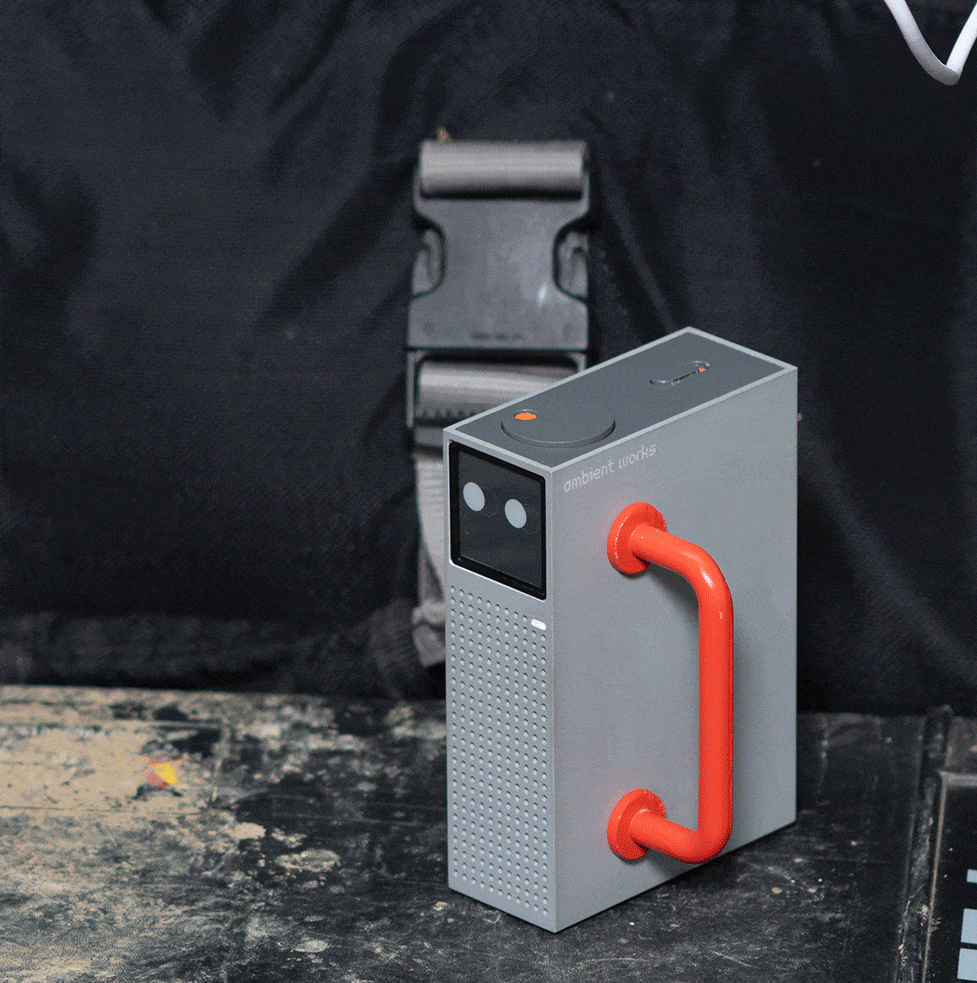

Ambient Works Unveils ambient one on Kickstarter – The First Air Quality Tracker Made by Creators, for Creators
London, June 2024

Ambient Works, a pioneering start-up funded by Royal College of Art and Imperial College graduates, is thrilled to announce the imminent launch of "ambient one," a state-of-the-art air quality monitor designed specifically for makers and creators. This revolutionary device will be available for pre-order soon on Kickstarter, marking a significant leap in environmental awareness within creative spaces. Rooted in the fundamental principle for which the air around us is a silent yet potent catalyst for creative thinking (as backed by countless studies by now), ambient one bridges the gap between busy makers and a market that is fragmented and oftentimes challenging to navigate.
"You can’t improve what you don’t measure. With 'ambient one' creatives will be able to monitor and record various pollutants in the air they’re breathing while receiving tailored advice on how to minimise toxic particles in their surroundings. Understanding and controlling air quality in creative environments isn’t just about health; it’s about nurturing creativity and boosting productivity, and we have witnessed this first hand” — explains Giulio Ammendola, Co-Founder of Ambient Works.

The device’s number one superpower lies in its unique capability to link air quality data with specific activities occurring in creative spaces. This feature enables users to pinpoint which materials, processes, and activities contribute most to pollution. By documenting such insights on a clear timeline, makers are equipped with the tools they need to effectively understand and reduce their environmental impact.
“It's very useful to be able to tag specific activities to certain levels of dust, as not all carry the same risk. For instance, high particulate matter levels while glazing is definitely something you want to avoid, as glazes can contain harmful levels of silica" — states Ceramist and Designer, Marie Tricaud (ambient one beta tester).
Intelligent and versatile, ambient one retains a compact, familiar book-like format, seamlessly blending ease of use with high design value. Created by makers for makers, this innovative tool is designed to accommodate various aspects of a creative’s routine in the studio, at the lab, or even at home.

It can be placed vertically, horizontally, or upside down. The display utilises e-paper technology, which will adjust and change modes automatically. It’s no news how electronic paper extends battery life and provides a more serene viewing experience – it won’t be just another screen in front of you.

Additional standout features include its built-in magnets, allowing it to be easily attached anywhere. This ensures that the sensors are positioned close to the action, thereby enhancing both functionality and convenience. It won’t be another gimmick hidden next to a wifi router.


Visual and functional appeal blend in an unmatched way, thanks to an expert choice of materials that enhances both. The main enclosure is, in fact, crafted from extruded aluminium profiles: sturdy and durable, it ensures longevity while providing a unique and premium tactile experience that sets ambient one apart from typical smart devices.

All ambient one’s electronic components are conveniently housed within the aluminium extrusion and can be effortlessly removed by taking out a few screws. This secures straightforward access for opening, upgrading, and repairing. Aluminium is also highly recyclable and offers versatile treatment options, aligning with Ambient Works’ commitment, at the intersection of fine design, innovation, and technology.
Fun and adaptable, but not compromising in accuracy – the tool boasts an extensive suite of auditing capabilities, tracing Particulate Matter, Carbon Dioxide, Volatile Organic Compounds (VOCs), and Nitrogen Oxides (NOx). Equipped with cutting-edge Swiss-made sensors, it ensures unparalleled precision and reliability in detecting air quality concerns.

Not to be overlooked, ambient one’s user-friendly app provides real-time data and AI-driven tips that, as mentioned, are always tailored to the specific activities and conditions of each user’s space. This information, in turn, provides valuable insights into individual creative processes, adding significant value to ambient one’s offerings.

Last but not least, the team is shaping the future of ambient one with pioneering approach, focusing on its expandability. They’re working to develop a modular design that would not only promise unprecedented adaptability but would also elevate its aesthetic and functional capabilities — so stay tuned.
###
Press package can be found here. For further information or additional assets please contact sofia@sofiapandolfo.me
ABOUT Ambient Works
Founded in 2023, Ambient Works is committed to improving environmental conditions in personal and professional settings. By focusing on innovative technology solutions like "ambient one," Ambient Works aims to empower individuals to take control of their environmental health, ensuring safer and more productive creative spaces. ambient one has been awarded an Innovate UK Creative Catalyst grant, which supports the development and testing of this technology. https://ambientworks.io @ambientworks
© Photo Credits - Raphael Bliss @raphaelbliss